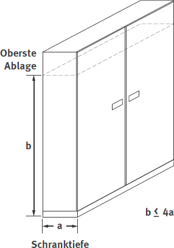
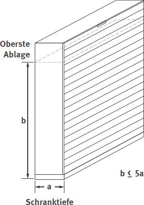

Abb. 3a
Abb. 3b
Dieser Abschnitt richtet sich insbesondere an den Hersteller von Lagereinrichtungen und Ladungsträgern bzw. an dessen Bevollmächtigten. Im Falle einer Einfuhr von Lagereinrichtungen und Ladungsträgern in den Europäischen Wirtschaftsraum wird der Inverkehrbringer als Hersteller betrachtet.
Lagereinrichtungen und Ladungsträger müssen so beschaffen und aufgestellt sein, dass sie bei bestimmungsgemäßer Verwendung gemäß den Angaben in der Betriebsanleitung die Last des Lagergutes sicher aufnehmen können. Ihre Stand- und Tragsicherheit muss den betrieblichen Beanspruchungen genügen und durch rechnerische Tragfähigkeitsnachweise für die tragenden Elemente und/oder durch Belastungsversuche nachgewiesen sein.
Falls für bestimmte Lagereinrichtungen und Ladungsträger gemäß allgemein anerkannten Regeln der Technik abweichende Anforderungen existieren (z. B. DIN EN 15 512 "Ortsfeste Regalsysteme aus Stahl – Verstellbare Palettenregale – Grundlagen der statischen Bemessung", DIN EN 15095 "Kraftbetriebene verschiebbare Paletten- und Fachbodenregale, Umlaufregale und Lagerlifte – Sicherheitsanforderungen"), sind diese abweichenden Anforderungen maßgeblich. Für nicht normativ geregelte Lagereinrichtungen und Ladungsträger gelten die folgenden Anforderungen.
4.1.2.1 Sicherheit gegen Bruch
Bei Lagereinrichtungen und Ladungsträgern muss die Sicherheit gegen Bruch mindestens das Zweifache der vorgesehenen Belastung (Summe der zulässigen Nutzlasten + Summe der Eigengewichte) betragen. Der Nachweis kann durch Berechnung und/oder Versuch erbracht werden.
4.1.2.2 Steifigkeit
Die Stand- und Tragsicherheit von Lagereinrichtungen und Ladungsträgern muss eine ausreichende Steifigkeit in Längs- und Querrichtung unter Berücksichtigung der anzusetzenden Horizontalkräfte in Abschnitt 4.1.2.4 einschließen.
4.1.2.3 Durchbiegung
Die maximale Durchbiegung der tragenden Elemente von Lagereinrichtungen bei Einbringung der zulässigen Nutzlast darf für metallische Werkstoffe höchstens 1/200, für alle anderen Werkstoffe höchstens 1/150 ihrer Stützweite betragen (siehe auch Abbildung 2).
Stützweite ist der Abstand zwischen zwei benachbarten Auflagern.

Abb. 2 Höchstzulässige Durchbiegung der tragenden Elemente von Lagereinrichtungen
4.1.2.4 Horizontalkräfte
Außer den bestimmbaren Horizontalkräften sind bei der Ermittlung der Stand- und Tragsicherheit von Lagereinrichtungen und Ladungsträgern zusätzliche Horizontalkräfte in der jeweiligen Lastebene sowohl in Längs- als auch in Tiefenrichtung, jedoch nicht gleichzeitig wirkend, anzusetzen. Die zusätzlich anzusetzenden Horizontalkräfte betragen mindestens:
Bestimmbare Horizontalkräfte sind z. B. Windkräfte im Freien oder horizontal wirkende Massenkräfte verfahrbarer Regale und Schränke.
Für Lagereinrichtungen, die von Hand be- oder entladen werden, siehe Abbildungen 3a und 3b.
Für Lagereinrichtungen, die mit Fördermitteln be- oder entladen werden, siehe Abbildungen 4a und 4b.
Für Ladungsträger im Stapel siehe Abbildungen 12a–c im Anhang 1.
|
|
Abb. 3a |
Abb. 3b |
| QE | = | anteiliges Eigengewicht der Lagereinrichtung |
| QF | = | Fachlast + anteiliges Eigengewicht der Lagereinrichtung (im Schwerpunkt der Aufstandsfläche) |
| H | = | Horizontalkraft = 1/200 der Gewichtskraft aus QF |
| HZ | = | zusätzliche Horizontalkraft = mindestens 50 N |
Beispiel:
QE = 6 kg
QF = 60 kg + 6 kg = 66 kg
66 kg erzeugen eine Gewichtskraft von
GF = 9,81 m/s² · 66 kg ≈ 10 m/s² · 66 kg = 660 N
H = 660 N / 200 = 3,3 N
HZ = mindestens 50 N
 |
 |
Abb. 4a |
Abb. 4b |
| QE | = | anteiliges Eigengewicht der Lagereinrichtung |
| QF | = | Fachlast + anteiliges Eigengewicht der Lagereinrichtung (im Schwerpunkt der Aufstandsfläche) |
| H | = | Horizontalkraft = 1/200 der Gewichtskraft aus QF |
| HZ | = | zusätzliche Horizontalkraft = mindestens 350 N |
Beispiel:
QE = 40 kg
QF = 3000 kg + 40 kg = 3040 kg
3040 kg erzeugen eine Gewichtskraft von
GF = 9,81 m/s² · 3040 kg ≈ 10 m/s² · 3040 kg = 30400 N
H = 30400 N / 200 = 152 N
HZ = mindestens 350 N
4.1.2.5 Standsicherheitsfaktor
Der Standsicherheitsfaktor gegen das Kippen von Lagereinrichtungen und Ladungsträgern muss mindestens 2,0 betragen.
Siehe auch Anhang 1, Erläuterungen und Beispiele, sowie Abbildungen 3a–4b und 12a–c
4.1.2.6 Aufstellflächen
Vor dem Aufstellen der Lagereinrichtungen und Ladungsträger muss die Belastbarkeit der Aufstellfläche nachgewiesen sein.
4.1.2.7 Belastungen aus dem Gebäude
Lagereinrichtungen, die statisch-konstruktiver Bestandteil eines Gebäudes sind, müssen auch den Bestimmungen des jeweiligen Landesbaurechtes entsprechen.
Eine feste Fußbodenverbindung macht die Lagereinrichtung nicht zum Bestandteil des Gebäudes.
Bauelemente von Lagereinrichtungen und Ladungsträgern – insbesondere deren Ecken und Kanten – müssen durch Formgebung oder Bearbeitung so gestaltet sein, dass Verletzungen vermieden werden.
Bei Metallböden kann dies z. B. durch Umbördelung oder Abwinkelung der Kanten erreicht werden.
Lagereinrichtungen und Ladungsträger müssen so errichtet und aufgestellt sein, dass ausreichend bemessene Verkehrswege sowie Flucht- und Rettungswege vorhanden sind. Bestimmungsgemäß vorgesehene Durchgänge in Regalen gelten ebenfalls als Verkehrswege.
Die Arbeitsstättenregel (ASR) A1.8 "Verkehrswege" beschreibt, wie ausreichend bemessene Verkehrswege beschaffen sein müssen.
Die ASR A2.3 "Fluchtwege und Notausgänge, Flucht- und Rettungsplan" gibt an, wie ausreichend bemessene Flucht- und Rettungswege beschaffen sein müssen. Bei der Bemessung von Flucht- und Rettungswegen ist zusätzlich das Bauordnungsrecht der Bundesländer zu berücksichtigen.
Die Standsicherheit von Regalen und Schränken muss in jedem Betriebszustand gegeben sein. Hierbei sind neben der zulässigen Nutzlast auch die auftretenden Kräfte beim Ein- und Auslagern (siehe Abschnitt 4.1.2.4) zu berücksichtigen. Ortsfeste Regale, die mit Fördermitteln be- oder entladen werden, müssen in besonderer Weise gesichert sein.
Als standsicher können unter Voraussetzung ausreichender Tragfähigkeit und lotrechter Aufstellung im Allgemeinen angesehen werden:
Besondere Sicherungen sind z. B. Verbindungen der Regale untereinander oder mit geeigneten Bauwerksteilen (z. B. ausreichend bemessene Bodenplatte).
 |  | |||
| Abb. 5 a | Höhen-Tiefen-Verhältnis für Schränke mit Flügeltüren | Abb. 5 b | Höhen-Tiefen-Verhältnis für Schränke mit Schiebe- oder Rolltüren | |
Für Regale muss eine Aufbau- und Betriebsanleitung vorliegen, die Hinweise für Aufstellung, Betrieb und notwendige Sicherheitsmaßnahmen enthält. Dies gilt auch für Schränke, deren Bauart besondere Hinweise für Aufstellung und Betrieb erforderlich macht.
4.2.3.1
Bauelemente von Regalen und Schränken müssen so ausgeführt oder gesichert sein, dass sie durch unbeabsichtigtes Lösen weder heraus- noch herabfallen können.
Solche Bauelemente sind z. B. eingesteckte Rahmenteile, eingehängte oder eingesteckte Einlegeteile sowie Schubladen und Auszüge.
4.2.3.2
Auflagen zur Aufnahme der Ladeeinheiten müssen so ausgeführt und angeordnet sein, dass ihr Herabfallen verhindert wird; sie müssen die Ladeeinheiten sicher aufnehmen können (siehe auch Abbildung 6).

Abb. 6 Beispiel für Einsatz und Gestaltung von Tiefenauflagen
4.2.3.3
An Regalen, die mit Fördermitteln be- und entladen werden, müssen die Träger gegen eine Aushebekraft von mindestens 5000 N gesichert sein. Die Sicherungselemente müssen so beschaffen sein, dass sie sich nicht unbeabsichtigt lösen können.
4.2.4.1
Die nicht für die Be- und Entladung vorgesehenen Seiten von Regalen müssen gegen Herabfallen von Ladeeinheiten und Lagergut gesichert sein. Die Dimensionierung der Sicherungen muss den Abmessungen und Lasten der Ladeeinheiten bzw. des Lagerguts entsprechen.
4.2.4.2
Die Bereiche über Regaldurchgängen müssen sicher gegen das Herabfallen von Ladeeinheiten und gegen das Hindurchfallen von Lagergut ausgeführt sein.
4.2.4.3
Doppel-Regale, die von zwei Seiten mit nicht leitliniengeführten Fördermitteln beladen werden, müssen Durchschiebesicherungen aufweisen, die bis zu einer Höhe von mindestens 150 mm wirksam sind (siehe auch Abbildung 7a).
4.2.4.4
Durchschiebesicherungen nach Abschnitt 4.2.4.3 sind nicht erforderlich, wenn bei mittiger Einlagerung zwischen den von beiden Seiten eingebrachten größten Ladeeinheiten ein Sicherheitsabstand von mindestens 100 mm gewährleistet ist (siehe auch Abbildung 7b).
 |
 |
Abb. 7a Durchschiebesicherung |
Abb. 7b Sicherheitsabstand |
4.2.4.5
An Regalen und Schränken mit kraftbetriebenen Inneneinrichtungen müssen Schutzmaßnahmen gegen herabfallende Gegenstände getroffen sein. Verkleidungen, Verdeckungen und Umwehrungen müssen ausreichend dimensioniert und ausreichend befestigt sein.
Siehe auch DIN EN 15095 "Kraftbetriebene verschiebbare Paletten- und Fachbodenregale, Umlaufregale und Lagerlifte – Sicherheitsanforderungen".
Ortsfeste Regale, die mit nicht leitliniengeführten Fördermitteln be- oder entladen werden, müssen an ihren Eckbereichen – auch an Durchfahrten – durch einen ausreichend dimensionierten, nicht mit dem Regal verbundenen und mit einer gelb-schwarzen Gefahrenkennzeichnung versehenen Anfahrschutz gesichert sein. Dies gilt nicht für die Innenseiten ortsfester Endregale bei verfahrbaren Einrichtungen.
Als ausreichend dimensioniert kann ein Anfahrschutz angesehen werden, wenn er den betrieblichen Anforderungen genügt, jedoch mindestens eine kinetische Energie von 400 J aufnehmen kann und mindestens 0,3 m hoch ist. Es darf dabei zu keiner Berührung der Stütze kommen.
Die betriebliche Praxis zeigt, dass Stützen auch in höher gelegenen Bereichen beschädigt werden. Es empfiehlt sich daher, Anfahrschutz mit einer Höhe von 400 mm und im Einzelfall auch mehr zu verwenden.
Ein defekter oder verformter Anfahrschutz ist zeitnah zu ersetzen.
Hinsichtlich gelb-schwarzer Gefahrenkennzeichnung siehe ASR A1.3 "Sicherheits- und Gesundheitsschutzkennzeichnung".
Regale müssen lotrecht aufgestellt sein. Abweichungen der Regalstützen von der Lotrechten in Längs- und Tiefenrichtung der Regale dürfen bei voller Beladung nicht mehr als 1/200 der Regalstützenhöhe betragen.
Siehe auch DIN EN 15620.
4.2.7.1
An ortsfesten Regalen, an verfahrbaren Regalen und Schränken sowie an Regalen und Schränken mit kraftbetriebenen Inneneinrichtungen müssen grundsätzlich folgende Angaben deutlich erkennbar und dauerhaft angebracht sein:
Die Angabe der zulässigen Fachlasten ist nicht erforderlich, wenn stattdessen die maximale Anzahl der Ladeeinheiten pro Fach und die maximale Last der Ladeeinheit angegeben sind.
Bei Regalen und Schränken, die von Hand be- und entladen werden und die eine Fachlast von weniger als 200 kg oder eine Feldlast von weniger 1000 kg besitzen (z. B. Büroregale), kann auf die oben genannten Angaben verzichten werden.
Die Fachlast ist diejenige Last, die in ein Fach eingebracht werden kann. Die Feldlast ist die Summe der Fachlasten in einem Feld, wobei in der Regel eine gleichmäßig verteilte Last zugrunde gelegt wird.
Siehe auch Abbildungen 8a und 8b.

Abb. 8a 4 Fächer = Feld eines Einfachregal

Abb. 8b 8 Fächer = Feld eines Doppelregals
4.2.7.2
Abweichend von Abschnitt 4.2.7.1 müssen bei Kragarmregalen anstelle der zulässigen Fach- und Feldlasten sowie der maximalen Last der Ladeeinheit die zulässigen Belastungen der einzelnen Kragarme und Stützen angegeben sein.
4.2.7.3
An kraftbetriebenen Regalen und Schränken und an Regalen und Schränken mit kraftbetriebenen Inneneinrichtungen müssen die wichtigsten Punkte der Betriebsanleitung für den sicheren Betrieb deutlich erkennbar und dauerhaft angebracht sein (z. B. in Form von Piktogrammen oder Kurztexten).
Siehe auch DIN EN 15095 "Kraftbetriebene verschiebbare Paletten- und Fachbodenregale, Umlaufregale und Lagerlifte – Sicherheitsanforderungen"
Ohne Hilfsmittel erreichbare Gefahrstellen an kraftbetriebenen Lagereinrichtungen müssen durch Schutzeinrichtungen gesichert sein.
Trennende Schutzeinrichtungen müssen zuverlässig befestigt und stabil sein. Sie dürfen nur mit Werkzeug zu lösen oder müssen mit dem Antrieb elektrisch verriegelt sein – erforderlichenfalls mit Zuhaltung.
Siehe Abschnitt 4.3.6.5.
4.2.9.1 Allgemeines
Die elektrische Ausrüstung von Lagereinrichtungen muss den allgemein anerkannten Regeln der Elektrotechnik entsprechen.
Die allgemein anerkannten Regeln der Elektrotechnik werden insbesondere durch Normen / VDE-Bestimmungen beschrieben, z. B.:
DIN EN 60204-1/VDE 0113-1 "Sicherheit von Maschinen; Elektrische Ausrüstung von Maschinen; Teil 1: Allgemeine Anforderungen"
4.2.9.2 Berührungslos wirkende Schutzeinrichtungen
Berührungslos wirkende Schutzeinrichtungen müssen für den Personenschutz in Abhängigkeit des jeweiligen Einsatzzwecks geeignet sein.
Siehe auch:
4.2.9.3 Befehlsgeräte und Stellteile
Befehlsgeräte und Stellteile müssen unverwechselbar und dauerhaft gekennzeichnet sein. Sie müssen gut erreichbar und ergonomisch ausgeführt sein. Für Befehlsgeräte und Stellteile muss, ausgenommen bei Automatikbetrieb, die Zuordnung der Bewegungsrichtung eindeutig sein.
4.2.9.4 Beleuchtung
Lagereinrichtungen müssen ausreichend und blendfrei beleuchtet sein. Die Beleuchtungsinstallationen müssen so ausgeführt und angeordnet sein, dass sie gegen mechanische Beschädigung geschützt sind.
Mindestwerte der Beleuchtungsstärke finden sich in Anhang 1 Nummer 2 der ASR A3.4 "Beleuchtung".
4.2.9.5 Betriebsartenwahlschalter
Ist ein Betriebsartenwahlschalter für den Handbetrieb im Instandhaltungsfall vorgesehen, darf der Betrieb nur in der Steuerungsart ohne Selbsthaltung erfolgen.
4.3.1.1
Kragarmregale müssen so beschaffen sein, dass die Kragarme nicht über die äußeren Abstützpunkte des Fußsockels hinausragen, es sei denn, die Standsicherheit ist auf andere Weise gewährleistet.
Die Standsicherheit kann z. B. durch Verankerung mit geeigneten Bauwerksteilen (z. B. mit der Bodenplatte) gewährleistet sein.
4.3.1.2
Bei Kragarmregalen für die Lagerung von Rundmaterial und Langgut muss sichergestellt sein, dass das Lagergut nicht herausfallen kann.
Dies kann z. B. durch Aufwinkeln der Kragarme oder durch eingesteckte Sicherungen erreicht werden (siehe auch Abbildung 9).

Abb. 9 Beispiel für die Ausführung von Kragarmregalen
4.3.2.1
Durchlaufregale müssen mit Einrichtungen ausgerüstet sein, die ein gefahrloses Einbringen und einen freien Durchlauf der Ladeeinheiten sicherstellen.
4.3.2.2
Störstellen in Durchlaufregalen müssen gefahrlos erreichbar sein.
Dies kann z. B. durch mindestens 0,5 m breite, neben den Durchlaufgassen angeordnete Gänge oder mittels geeigneter Befahrgeräte erfolgen.
4.3.2.3
An den Aufgabe- und Entnahmestellen müssen Einrichtungen vorhanden sein, die ein unbeabsichtigtes Herauslaufen der Ladeeinheiten verhindern.
4.3.2.4
Gefahrstellen zwischen durchlaufendem Lagergut und Regalteilen, die von Verkehrswegen aus erreicht werden können, müssen gesichert sein. Dies gilt nicht für Gänge, die ausschließlich der Behebung von Störungen dienen.
4.3.2.5
Die Festlegungen der Abschnitte 4.3.2.1 bis 4.3.2.4 gelten sinngemäß auch für Einschubregale sowie für ähnliche, auch automatisierte Lagereinrichtungen.
4.3.3.1
Der Abstand der Auflagen in den Regalgassen muss unabhängig vom Abstand der Stützen so gewählt sein, dass ein Auflagemaß von 30 mm auf jeder der beiden Palettenseiten nicht unterschritten werden kann.
4.3.3.2
Die zur Aufnahme von Lagergut vorgesehenen Regalgassen gelten nicht als Verkehrswege. Auf das Zutrittsverbot für Fußgänger muss durch das Verbotszeichen P004 "Für Fußgänger verboten" hingewiesen sein.
Ausführung des Verbotszeichens P004: siehe ASR A1.3 "Sicherheits- und Gesundheitsschutzkennzeichnung".
4.3.4.1 Lastannahmen
Regalbühnen und zugehörige Treppen müssen entsprechend den Lastannahmen in Anhang 2 ausgelegt sein.
4.3.4.2 Absturzsicherungen
Absturzstellen von Regalbühnen sind durch Umwehrungen gemäß Abschnitt 5.1 der ASR A2.1 abzusichern.
Umwehrungen müssen so beschaffen und angebracht sein, dass an ihrer Oberkante eine Horizontallast von mindestens 500 N/m aufgenommen werden kann.
Die Höhe von Umwehrungen muss mindestens 1,0 m bzw. ab einer Absturzhöhe von mehr als 12 m mindestens 1,10 m betragen. Anmerkung: Es ist empfehlenswert, Umwehrungen grundsätzlich mit einer Höhe von mindestens 1,10 m auszuführen.
Wenn für die Umwehrungen Geländer verwendet werden, müssen diese:
Bei Füllstabgeländern darf der lichte Abstand der senkrechten Zwischenstäbe nicht mehr als 0,18 m betragen. Der Abstand zwischen der Oberkante des Fußbodens und der Unterkante der Umwehrung darf 0,18 m nicht überschreiten.
Bei Knieleistengeländern darf der Abstand zwischen Fuß- und Knieleiste, zwischen Knieleiste und Handlauf oder zwischen zwei Knieleisten nicht größer als 0,50 m sein. Die Höhe der Fußleisten muss auf das Lagergut abgestimmt sein, beträgt jedoch mindestens 0,05 m. Die Fußleisten sind unmittelbar an der Absturzkante anzuordnen.
Ausgenommen hiervon sind Be- und Entladestellen (siehe 4.3.4.4).
Siehe auch:
4.3.4.3 Schutz gegen herabfallende Gegenstände
Nicht geschlossene Bühnenböden wie Gitterroste oder Lochbleche müssen so ausgeführt sein, dass eine Gefährdung darunter befindlicher Personen durch herabfallende Gegenstände vermieden ist.
Siehe auch:
4.3.4.4 Be- und Entladestellen
Die Absturzsicherung an Be- und Entladestellen soll nach den Grundsätzen des TOP-Prinzips primär mithilfe von Schleusengeländern – in DIN EN 15635 Palettentor genannt – realisiert werden.
Wenn der Einsatz von Schleusengeländern nicht möglich ist, sind aufklappbare oder verschiebbare Geländer zu verwenden. Die Geländer dürfen sich nicht in Richtung des Absturzbereichs öffnen lassen und müssen mit Sicherungen gegen unbeabsichtigtes Öffnen versehen sein.
4.3.5.1 Standsicherheit
Verfahrbare Regale und Schränke müssen so beschaffen sein, dass auch bei ungünstigster Lastverteilung beim Anfahren und Abbremsen der verfahrbaren Einheiten die Standsicherheit gewährleistet ist. Übersteigt bei Regalen und Schränken die Höhe der obersten Ablage das Fünffache des Radachsenabstandes, müssen Sicherungen gegen Kippen vorhanden sein, die das rechnerische Kippmoment mit mindestens zweifacher Sicherheit aufnehmen können. Gefahren infolge Radbruch müssen durch konstruktive Maßnahmen vermieden sein.
Die Standsicherheit ist im Allgemeinen gewährleistet, wenn die Höhe der obersten Ablage über der Standfläche höchstens das Fünffache des Radachsenabstandes beträgt.
Konstruktive Maßnahmen gegen Radbruch sind z. B. eine entsprechende Gestaltung des Wagenrahmens oder Radbruchstützen.
Siehe auch Abbildung 10.

Abb. 10 Verhältnis der Höhe der obersten Ablage zum Radachsenabstand
4.3.5.2 Fußbodengestaltung
Zur Vermeidung von Stolperstellen im Bereich verfahrbarer Regale und Schränke müssen Schienen fußbodenbündig verlegt oder es müssen zumindest im gesamten Regalbereich entsprechend hohe Ausgleichböden eingebaut sein. Die durch Ausgleichböden gebildeten Absätze müssen angeschrägt oder mit einer Kennzeichnung (z. B. deutlicher Farbkontrast) versehen sein, sofern sie nicht deutlich erkennbar sind.
Im Boden liegende Führungsrinnen dürfen nicht breiter sein, als die Konstruktion dies erfordert. Endstopper müssen fußbodenbündig oder – falls dies nicht möglich ist – durch Gefahrenkennzeichnung und Beleuchtung deutlich erkennbar sein.
Hinsichtlich der Gefahrenkennzeichnung siehe ASR A1.3 "Sicherheits- und Gesundheitsschutzkennzeichnung".
4.3.5.3 Fußbodenabstand
Der Abstand zwischen den Unterkanten verfahrbarer Regale und Schränke und dem Fußboden darf zur Vermeidung von Fußverletzungen folgende Maße an keiner Stelle überschreiten:
Bodenunebenheiten müssen ausgeglichen sein. Sofern Fördermittel höhere Bodenabstände erforderlich machen, müssen Fußverletzungen durch den Einbau von zusätzlichen Schutzeinrichtungen verhindert sein.
4.3.5.4 Wagenabdeckungen
Abdeckungen zur Sicherung von Gefahrstellen müssen in zugänglichen Bereichen von verfahrbaren Regalen bzw. Schränken begehbar ausgebildet sein.
4.3.5.5 Kantenabstand
Der Abstand der festen Kanten zwischen verfahrbaren Regal- und Schrankeinheiten muss zur Vermeidung von Fingerquetschungen mindestens 25 mm betragen.
Dies kann z. B. durch Distanzhalter und durch auf die Kanten aufgesetzte nachgiebige Abdeckungen erreicht werden.
4.3.5.6 Distanzhalter
Distanzhalter müssen so bemessen sein, dass der Abstand nach Abschnitt 4.3.5.5 auch bei vorgezogenen Stirnwänden oder sonstigen hervorstehenden Bauteilen gewährleistet ist; sie müssen außerhalb des Zugriffbereiches und im Übrigen so angebracht sein, dass sie ihrerseits keine Quetsch- und Scherstellen bilden.
4.3.5.7 Staub- und Kantenabdeckungen
Staubabdeckungen und sonstige Kantenabdeckungen dürfen keine Quetsch- und Scherstellen bilden.
4.3.5.8 Abstände zu Bauwerksteilen
Verfahrbare Regale und Schränke müssen so eingebaut sein, dass sie keine Gefahrstellen mit Bauwerksteilen oder sonstigen Einrichtungen bilden. Der Abstand zu Wandvorsprüngen, benachbarten Regalen und Schränken sowie ähnlichen Einrichtungen muss mindestens 0,5 m betragen, sofern keine besonderen Schutzeinrichtungen vorhanden sind. Der Abstand verfahrbarer Einheiten von ebenen Wänden muss mindestens 50 mm, darf jedoch nicht mehr als 180 mm betragen. Die ebenen Wände dürfen nicht nachgiebig sein und müssen mindestens 2,0 m über der Aufstandsfläche hoch sein. Falls zur Decke Quetsch- und Scherstellen entstehen können, muss der Abstand von der Oberkante der beweglichen Teile zur Decke mindestens 100 mm entsprechen.
Siehe auch Abbildung 11.

Abb. 11 Wandabstände verfahrbarer Regale und Schränke
4.3.5.9 Nutzlastbeschränkungen
Für die nachstehend aufgeführten Einrichtungen gilt:
4.3.5.10 Verfahrbare Regale und Schränke mit Kraftantrieb
4.3.5.10.1 Not-Halt-Einrichtungen
Verfahrbare Regale und Schränke mit Kraftantrieb müssen mit einer Not-Halt-Einrichtung ausgerüstet sein, von der aus die Zugänge eingesehen werden können.
Auszug aus DIN EN 15095:2009-06 „Kraftbetriebene verschiebbare Paletten- und Fachbodenregale, Umlaufregale und Lagerlifte – Sicherheitsanforderungen:
"Alle Steuerstände, von denen eine automatische Bewegung ausgelöst werden kann, müssen mit Not-Halt-Einrichtungen ausgerüstet sein. Ausgenommen sind zusätzliche drahtlose Steuerstände unter der Voraussetzung, dass ein globales Gang-Frei-Meldesystem integriert ist.
Bei verfahrbaren Palettenregal- und Fachbodenregalsystemen mit einem Stopp-Taster an jeder verfahrbaren Einheit und einer Ganglänge von weniger als 20 m ist es ausreichend, einen Not-Halt-Taster an einer Stelle vorzusehen, von der aus ein Überblick über den Block möglich ist. Sofern die Blockbreite mehr als 25 m beträgt, sind zusätzliche Not-Halt-Taster notwendig.
Verfahrbare Fachbodenregale, die mit einer Kraft von 500 N oder weniger gestoppt werden können, sind von den Anforderungen dieses Abschnittes ausgenommen."
Siehe auch DIN EN 13850 "Sicherheit von Maschinen – Not-Halt-Funktion – Gestaltungsleitsätze".
4.3.5.10.2 Schutzeinrichtungen
Verfahrbare Regale müssen mit Schutzeinrichtungen versehen sein, um Gefährdungen von Personen zu vermeiden.
Durch Auslösen der Sicherheitsfunktion muss das Fahrwerk kontrolliert und sicher innerhalb des Nachlaufs der Einrichtung stoppen, ohne Personen anzufahren. Der maximale Nachlauf nach dem Ansprechen der Schutzeinrichtung darf 100 mm betragen.
An der Vorderkante jedes Fahrwerks müssen Schaltleisten oder berührungslos wirkende Schutzeinrichtungen im Fußbereich an beiden Längsseiten des Fahrwerks der verfahrbaren Einheiten angebracht sein. Sie müssen beidseitig innerhalb eines geöffneten Ganges wirksam sein. Schaltleisten müssen mit rot-weißer Kennzeichnung versehen sein.
Ein automatisches Wiederanlaufen des verfahrbaren Regals nach der Freigabe der Sicherheitseinrichtung ist zu verhindern.
Schaltleisten oder berührungslos wirkende Schutzeinrichtungen müssen bis in den Endbereich der Fahrwerke durchgezogen sein. Sofern dies aus konstruktiven Gründen praktisch nicht durchführbar ist, dürfen sie höchstens 100 mm von den Stirnseiten der Einrichtungen entfernt enden.
Bei verfahrbaren Palettenregalen muss der Zugang in einen Regalgang z. B. durch berührungslos wirkende Schutzeinrichtungen gesichert werden. Nach Betätigung der Sicherheitseinrichtung darf die Bewegung der verfahrbaren Regale erst nach Rücksetzen des Systems neben dem offenen Gang möglich sein (außer in der Wartungs-Betriebsart). Einrichtungen zum Rücksetzen sind so anzuordnen, dass die Bedienperson volle Einsicht in den zu schließenden Gang hat.
Verschiebbare Regale, die mit einer Kraft von 500 N oder weniger gestoppt werden können, sind von den Anforderungen dieses Abschnittes ausgenommen.
4.3.5.10.3 Betriebsart "Wartung und Störungsbeseitigung"
Verfahrbare Palettenregale können für die Betriebsart "Wartung und Störungsbeseitigung" mit einem Betriebsartenwahlschalter (z. B. Schlüsselschalter) ausgestattet sein, um die Regale zu verfahren, ohne die Sicherheitselemente zu aktivieren. Diese Einrichtung darf nicht für den Normalbetrieb verfügbar sein (siehe DIN EN 15095 "Kraftbetriebene verschiebbare Paletten- und Fachbodenregale, Umlaufregale und Lagerlifte – Sicherheitsanforderungen").
Anmerkung: Wartung und Störungsbeseitigung stellen eine besondere Betriebsart dar. Die zugehörigen Befehlsgeräte und Stellteile müssen so angeordnet sein, dass ihre Betätigung nur mit Zustimmung oder durch Steuerelemente ohne Selbsthaltung aus einer sicheren Position heraus erfolgt.
4.3.6.1 Schutz gegen gefahrbringende Bewegungen
An Regalen und Schränken mit kraftbetriebenen Inneneinrichtungen müssen Gefahrstellen zwischen den Inneneinrichtungen untereinander sowie den Inneneinrichtungen und dem Gehäuse (Be- und Entlade-Öffnungen) vermieden oder gesichert sein. Die Schutzeinrichtungen müssen nach ihrem Betätigen die kraftbetriebenen Einrichtungen gefahrlos stillsetzen, müssen sicher gegen Unter- oder Übergreifen sein und dürfen ihrerseits keine Quetsch- und Scherstellen bilden; ein selbsttätiges Wiederanlaufen muss verhindert sein.
Hinsichtlich der Kopplung von Auszügen siehe Abschnitt 4.3.6.5.
4.3.6.2 Tragketten
Tragketten müssen mindestens mit siebenfacher statischer oder fünffacher dynamischer Sicherheit gegen Bruch ausgelegt sein. Der ungünstigere Fall ist der maßgebliche.
Siehe hierzu auch DIN ISO 10823 "Hinweise zur Auswahl von Rollenkettentrieben".
4.3.6.3 Ablageflächen
Ablageflächen vor den Entnahmeöffnungen müssen für im Sitzen zu verrichtende Tätigkeiten zwischen 680 mm und 750 mm und für im Stehen zu verrichtende Tätigkeiten zwischen 750 mm und 1150 mm oberhalb der Standfläche angebracht sein.
4.3.6.4 Maßnahmen gegen ungleichmäßige Lastverteilung
Regale und Schränke mit kraftbetriebenen Inneneinrichtungen müssen so beschaffen sein, dass bei höchster ungleichmäßiger Lastverteilung ein ungewollter Vor- oder Rücklauf wirksam verhindert ist. Ersatzweise sind bei mehr als 3 t Nutzlast Einrichtungen zulässig, die das Erreichen der zulässigen ungleichmäßigen Lastverteilung optisch oder akustisch anzeigen sowie bei deren Überschreitung das Anlaufen verhindern oder den Bewegungsvorgang unterbrechen. In der Betriebsanleitung muss das folgerichtige Be- und Entladen beschrieben sein.
4.3.6.5 Elektrische Verriegelung von beweglich trennenden Schutzeinrichtungen zur Störungsbeseitigung
An Regalen und Schränken mit kraftbetriebenen Inneneinrichtungen müssen beweglich trennende Schutzeinrichtungen (z. B. Klappen, Türen), die zur Beseitigung betriebsspezifischer Störungen geöffnet werden, mit dem Antrieb verriegelt sein.
4.3.6.6 Handkurbeln
Lagereinrichtungen, die auch für Handantrieb ausgelegt sind, müssen so konstruiert sein, dass der Kraftantrieb den Handantrieb nicht in Bewegung setzen kann. Dies gilt auch für den Notbetrieb.
Für Ladungsträger muss eine Betriebsanleitung des Herstellers vorliegen, die die für Aufstellung und Betrieb notwendigen Kenndaten und Sicherheitsmaßnahmen enthält.
Dazu gehören insbesondere Angaben über die zulässige Nutzlast, Auflast und Stapelhöhe sowie Hinweise auf besondere Gefahren bei der Stapelung.
Auflast ist das Gewicht aller auf die unterste Stapeleinheit aufgesetzten Stapeleinheiten.
An Ladungsträgern müssen folgende Angaben deutlich erkennbar und dauerhaft angebracht sein:
Diesem ist entsprochen, wenn Paletten und Stapelbehälter nach entsprechenden nationalen Normen oder nach UIC (Union International des Chemins de Fer – Internationaler Eisenbahnverband –) gekennzeichnet sind.
An Stapelbehältern muss die Kennzeichnung nach Abschnitt 4.4.2 in der Form ausgeführt sein, dass die zulässige Nutzlast und die zulässige Auflast voneinander getrennt ausgewiesen sind.
Beispiel einer Kennzeichnung:
DLE/1t/4,4t/22
Es bedeutet:
DLE = Hersteller, Einführer oder Betreiber
1t = zulässige Nutzlast einer Stapeleinheit
4,4t = zulässige Auflast
22 = Baujahr 2022
Stapelbehälter und Stapeleinheiten aus Flachpaletten mit Stapelhilfsmitteln müssen so gestaltet sein, dass sie formschlüssig übereinander gestapelt werden können. Dies gilt nicht für Stapeleinheiten, die vollflächig stapelbar sind.
Stapelhilfsmittel müssen ausreichend tragfähig sowie mit den Flachpaletten formschlüssig und lösbar zu verbinden sein. Sie müssen hinsichtlich ihrer Tragfähigkeit, Auflast und Stapelhöhe mit den eingesetzten Ladungsträgern abgestimmt sein.